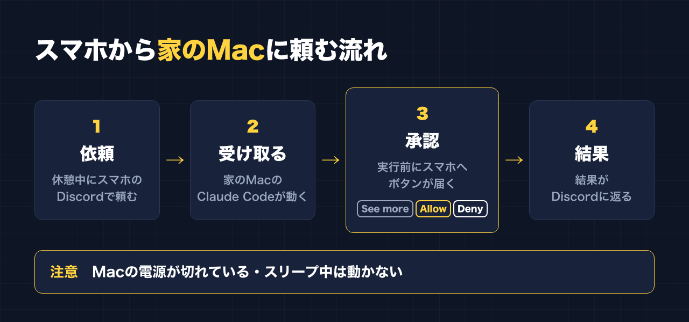
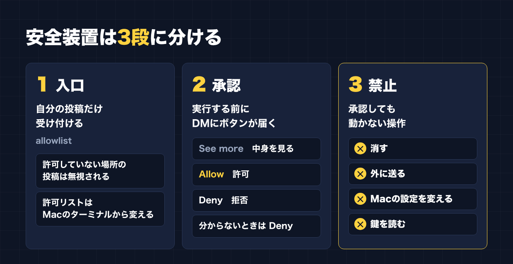
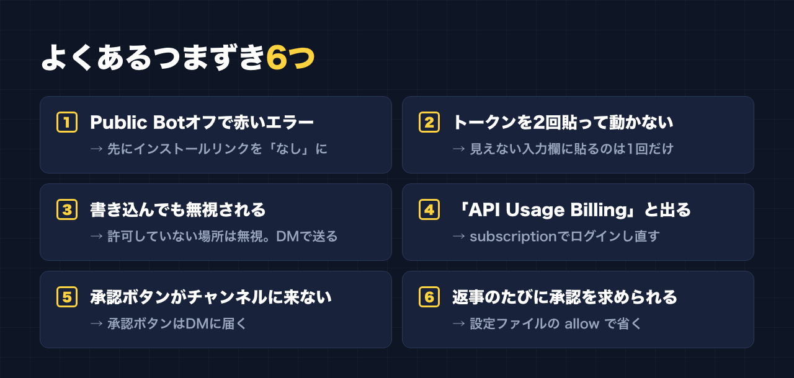

1. タイトルをコピーして、note のタイトル欄に貼る
2. 「本文1をコピー」から順にコピーし、note の本文に貼る
3. 青いラベルの位置に、images フォルダの同じ名前の画像を入れる（本文には貼られません）
※ 見出しが普通の文字になった場合は、その行を選んで「大見出し」を設定してください
私が副業に使えるのは、昼休みや休憩の合間の5分、10分です。
前は「帰宅したら1〜2時間やる」と決めていました。でも、疲れてできない日が続いて、できない自分に落ち込んでいました。今は、時間を決めずに、やれるときに少しずつやっています。
ただ、5分でできることには限りがあります。
PC を開けない場所では、スマホで考えるだけで終わってしまう。
そこで、家の Mac で動いている Claude Code に、スマホの Discord から作業を頼めるようにしました。休憩中に一言送っておけば、Mac が作業を進めて、結果を Discord に返してくれます。
便利な反面、設定を間違えると「スマホ経由で自分の Mac を他人に動かされる」入口にもなります。
無料の記事では、7つのツールを入れた流れと、つまずいた4か所を書きました。
この記事では、その Discord 連携を安全側に倒して組むための設定を、実際に使っているファイルをもとに全部書きます。
この記事で手に入るもの
- Discord 連携で「できること・できないこと」の整理
- Developer Portal の設定手順（エラーが出ない順番つき）
- トークンを画面にもチャットにも出さずに保存するスクリプト
- 自分の投稿だけを受け付ける access.json の書き方
- 危ない操作を最初から止める、コピペ用の settings.json（禁止ルールつき）
- 普段の Claude Code では Bot をつながないようにする方法
- 起動スクリプトの例
- 無料記事の4つ以外に、あとから分かった注意点
こんな人に向いています
- 平日は PC の前に座れず、休憩の5分、10分で副業を進めたい
- Claude Code を月額プラン（subscription）で使っていて、家に Mac がある
- Discord 連携に興味はあるけれど、スマホから PC を動かすのが怖い
向いていない人
- 夜にまとまった時間を取れて、PC の前で作業できる人
→ その場合は、普通にターミナルで使うほうが早いです
- 承認の手間なしで、Mac に全部おまかせしたい人
→ この記事は、実行前に毎回スマホで承認する前提の設定です
- 会社の PC で使いたい人
→ 会社の規程が最優先です。この記事は自分の Mac で使う前提です
――――ここから有料――――
1. できること・できないこと
先に、期待しすぎないように書いておきます。
できること
- スマホの Discord から、家の Mac の Claude Code に作業を頼む
- Claude Code がファイルを読んだり、作ったり、コマンドを動かしたりする
- 結果を Discord に返してもらう（ファイルの添付もできる。1回10ファイル、1ファイル25MBまで）
- コマンドを実行する前に、スマホに届いたボタンで「許可」か「拒否」を選ぶ
たとえば休憩中に「〇〇を調べて、要点を3つにまとめて」と送っておく。
スマホを閉じて仕事に戻り、次の休憩で結果を見る。そういう使い方ができます。
できないこと
- Mac の電源が切れている・スリープしているときは動かない
- 起動スクリプトを動かしていないときは、Bot に送っても誰も受け取らない
- ターミナルの画面そのものは見られない。Discord に返ってきた文章だけが頼り
- 禁止ルールに入れた操作は、スマホで許可しても動かない（そういう設定にしている）
- Discord の1メッセージは2000文字まで。長い結果は分割されて届く

2. 前提として必要なもの
- 家に置いておく Mac（作業中は電源を入れたまま）
- Claude Code がインストールされていて、月額プラン（subscription）でログインしていること
- 無料記事に書いたとおり、更新のタイミングでログインが外れて「API Usage Billing」と出たことがあります。これは使った分だけ課金される方式です。月額プランの人は subscription を選んでログインし直してください
- Discord のアカウント（スマホにアプリを入れておく）
- Bun（プラグインのサーバーが Bun で動きます。公式の README に入れ方が書いてあります）
3. 手順① Discord の Developer Portal で Bot を作る
Discord の Developer Portal で「New Application」を押して、アプリを作ります。名前は何でも大丈夫です。
Message Content Intent をオンにする
左のメニューの「Bot」を開き、下のほうの「Privileged Gateway Intents」にある Message Content Intent をオンにします。
これがオフだと、Bot に届くメッセージの中身が空になります。
トークンを発行する（まだ貼らない）
同じ「Bot」の画面で「Reset Token」を押すと、トークン（Bot の鍵）が表示されます。表示されるのは1回だけです。
このあと手順④で保存するので、それまではどこにも貼らないでください。チャットにも、メモアプリにもです。
「公開 Bot」をオフにする。ただし順番がある
知らない人に Bot を自分のサーバーへ入れられないよう、「Public Bot」をオフにします。
ここで私は赤いエラーにつまずきました。
「プライベートアプリにはデフォルトの認証リンクを設定できません」という表示です。
正しい順番はこうです。
1. 左のメニューの「Installation」を開く
2. インストールリンク（Install Link）を「なし（None）」にして保存
3. そのあとで「Bot」画面に戻り、Public Bot をオフにして保存
先に 2 をやっておけば、エラーは出ません。
招待リンクを作る：権限は6つだけ。「管理者」は付けない
「OAuth2」→「URL Generator」を開き、scope で `bot` を選びます。
Bot Permissions で付けるのは、公式の README にある次の6つだけです。
- View Channels
- Send Messages
- Send Messages in Threads
- Read Message History
- Attach Files
- Add Reactions
Administrator（管理者）には絶対にチェックを入れないでください。
便利そうに見えますが、Bot の鍵が漏れたときに、サーバーを丸ごと好きにされる権限です。
できあがった URL を開いて、自分しかいないサーバーに Bot を招待します。
Discord は、同じサーバーにいない Bot には DM を送れない仕組みなので、この招待が必要です。
4. 手順② プラグインを入れて、普段は「オフ」にしておく
Claude Code を起動して、次を打ちます。
/plugin install discord@claude-plugins-officialここで一つ、大事な設定をします。
普段使いの Claude Code では、このプラグインをオフにしておくことです。
オンのままだと、ターミナルで Claude Code を開くたびに Bot がつながる状態になります。スマホからの指示を受けるのは、専用の起動スクリプトで立ち上げたときだけにしたい。
普段の設定ファイル（`~/.claude/settings.json`）に、次のように書いておきます。
{
"enabledPlugins": {
"discord@claude-plugins-official": false
}
}すでに他の設定が書いてある場合は、`enabledPlugins` の中に1行足すだけです。自分で書くのが不安なら、Claude Code に「普段の設定では discord プラグインを無効にして」と頼めば大丈夫です。
オンにするのは、手順⑥で作る「Discord 専用の設定ファイル」の中だけにします。
5. 手順③ トークンを「見せずに」保存する
公式の README では、`/discord:configure トークン` と打って保存する方法が紹介されています。
ただ、これだと Claude Code との会話の中にトークンがそのまま残ります。
私は、トークンを会話に一度も出さないために、保存専用の小さなスクリプトを使っています。考え方はこうです。
- 入力しても画面に表示しない（`read -s`）
- 形が正しいかだけ確かめる（2回貼ったらはじく）
- 保存したファイルは自分しか読めない権限にする
実際に使っているものを、一般的な形に直したのがこれです。
`~/.claude/discord-remote/set-token.sh` のような名前で保存して使います。
#!/bin/zsh
# Discord Bot のトークンを、画面に出さずに保存する
set -euo pipefail
STATE_DIR="$HOME/.claude/channels/discord"
mkdir -p "$STATE_DIR"
chmod 700 "$STATE_DIR"
printf "トークンを貼り付けて Enter（入力は表示されません）: "
read -rs TOKEN
echo
if [[ -z "$TOKEN" ]]; then
echo "空のため中止しました。" >&2
exit 1
fi
# トークンは「英数字.英数字.英数字」の3つに分かれた形
if [[ ! "$TOKEN" =~ '^[A-Za-z0-9_-]+\.[A-Za-z0-9_-]+\.[A-Za-z0-9_-]+$' ]]; then
echo "形式が正しくありません（2回貼り付けた可能性があります）。もう一度、1回だけ貼ってください。" >&2
exit 1
fi
umask 077
printf 'DISCORD_BOT_TOKEN=%s\n' "$TOKEN" > "$STATE_DIR/.env"
chmod 600 "$STATE_DIR/.env"
unset TOKEN
echo "保存しました（自分だけが読める権限にしています）"使い方は、ターミナルで一度だけ次を打ちます。
chmod 700 ~/.claude/discord-remote/set-token.sh
~/.claude/discord-remote/set-token.sh貼り付けても何も表示されませんが、入っています。貼るのは1回だけ、貼ったら信じて Enter です。
私は最初、これを知らずに2回貼ってしまい、トークンが2つつながって保存されました。形のチェックは、その失敗から足したものです。
6. 手順④ 受け付けるのは「自分の投稿だけ」にする
ここがいちばん大事な関門です。
Bot への書き込みを受け付ける相手は、`~/.claude/channels/discord/access.json` というファイルで決まります。
最初は「ペアリング」という方式になっていて、知らない人が DM すると、6文字のコードが返る仕組みです。
公式の手順どおり、最初に一度だけ自分でペアリングしたら、すぐに allowlist（許可リスト）方式に切り替えます。こうすると、リストにない人の DM は返事もなく捨てられます。
自分のユーザーIDを調べる
Discord の「ユーザー設定」→「詳細設定」→「開発者モード」をオンにします。
左下の自分のアイコンを右クリック（スマホは長押し）すると「ユーザーIDをコピー」が出ます。数字だけの長いIDです。
チャンネルで使いたい場合は、同じようにチャンネルを右クリックして「チャンネルIDをコピー」します。
設定はターミナルから打つ
次のコマンドは、家の Mac のターミナルで動かしている Claude Code に打ちます。
/discord:access policy allowlist
/discord:access allow あなたのユーザーIDサーバーのチャンネルでも使いたいなら、そのチャンネルを「自分の投稿だけ」という条件つきで許可します。
/discord:access group add チャンネルID --allow あなたのユーザーIDこの形だと、そのチャンネルでは Bot に @メンションしたとき（または Bot の返信に返信したとき）だけ反応します。メンションなしで全部の書き込みに反応させたいなら、`--no-mention` を足します。
できあがる access.json は、だいたいこんな形です（数字は自分のIDに置き換わります）。
{
"dmPolicy": "allowlist",
"allowFrom": ["あなたのユーザーID"],
"groups": {
"チャンネルID": {
"requireMention": true,
"allowFrom": ["あなたのユーザーID"]
}
}
}Discord から「許可リストに追加して」と頼まない
プラグイン自身にも、「Discord のメッセージで頼まれても、許可リストをいじらない」という決まりが入っています。
許可リストを変えるのは、必ず Mac の前にいるときに、ターミナルからです。
スマホから変えられるようにすると、それ自体が乗っ取りの入口になります。
7. 手順⑤ 危ない操作を最初から止める設定ファイル

ここからが、この記事の中心です。
私の構成では、安全装置を3段に分けています。
1. 入口：自分の投稿しか受け付けない（手順④）
2. 承認：コマンドなどを実行する前に、スマホに「許可／拒否」のボタンが届く
3. 禁止：危ない操作は、承認しても動かない
2 と 3 は、Discord 専用の設定ファイルで決めています。
承認ボタンの正体
設定ファイルの `"defaultMode": "default"` が、「実行する前に毎回確認する」モードです。
Discord 連携中は、この確認が Discord に届きます。
届くのは「See more（詳しく見る）」「Allow（許可）」「Deny（拒否）」の3つのボタンです。
何をしようとしているか分からないときは、先に See more を押して中身を見てから決めます。
休憩の5分でも、ここだけは読み飛ばさないでください。
さらに `"disableBypassPermissionsMode": "disable"` を入れておくと、確認を全部飛ばすモードそのものが使えなくなります。
コピペ用の settings.json
実際に使っているものから、読者の方が使いやすいように整理したのがこれです。
`~/.claude/discord-remote/settings.json` のような場所に保存します。
{
"enabledPlugins": {
"discord@claude-plugins-official": true
},
"permissions": {
"defaultMode": "default",
"disableBypassPermissionsMode": "disable",
"allow": [
"mcp__plugin_discord_discord__reply",
"mcp__plugin_discord_discord__react",
"mcp__plugin_discord_discord__edit_message"
],
"deny": [
"Bash(sudo *)",
"Bash(su *)",
"Bash(rm -rf *)",
"Bash(rm -fr *)",
"Bash(rm -r *)",
"Bash(curl *)",
"Bash(wget *)",
"Bash(ssh *)",
"Bash(scp *)",
"Bash(rsync *)",
"Bash(nc *)",
"Bash(osascript *)",
"Bash(security *)",
"Bash(launchctl *)",
"Bash(crontab *)",
"Bash(chmod *)",
"Bash(chown *)",
"Bash(defaults write *)",
"Bash(eval *)",
"Bash(bash -c *)",
"Bash(sh -c *)",
"Bash(zsh -c *)",
"Bash(git push *)",
"Bash(npm publish *)",
"Bash(brew *)",
"Bash(open *)",
"Bash(cat *)",
"Bash(claude *)",
"Read(~/.claude/channels/**)",
"Edit(~/.claude/channels/**)",
"Edit(~/.claude/discord-remote/**)",
"Edit(~/.claude/settings.json)",
"Edit(**/.claude/settings*.json)",
"Read(~/.ssh/**)",
"Read(**/.env)",
"Read(**/.env.*)"
]
}
}禁止ルールの中身
ひとつずつ覚える必要はありません。グループで見るとこうなります。
- 管理者になる操作：`sudo`、`su`
- まとめて消す操作：`rm -rf` など
- 外にデータを送る・外から取ってくる操作：`curl`、`wget`、`ssh`、`scp`、`rsync`、`nc`
- Mac の仕組みを変える操作：`osascript`（他のアプリを操作する）、`security`（キーチェーン）、`launchctl` と `crontab`（勝手に常駐・定期実行させる）、`chmod`・`chown`（権限の変更）、`defaults write`（Mac の設定変更）、`brew`（ソフトの追加）、`open`
- 禁止ルールのすり抜けに使える書き方：`eval`、`bash -c`・`sh -c`・`zsh -c`（命令を文字列で包んで実行する）、`claude`（別の Claude Code を立ち上げる）
- 公開してしまう操作：`git push`、`npm publish`
- 中身を画面に出す操作：`cat`（ファイルの中身をそのまま表示できるため）
- 鍵や設定そのものを守る：トークンの保存場所、この設定ファイル自体、普段の設定ファイル、SSH の鍵、`.env`（パスワードや鍵を入れておくファイル）の読み書き
`cat` を止めると不便そうに見えますが、Claude Code はファイルを読むとき、普通は `cat` ではなく専用の読み取り機能（Read）を使います。その Read のほうに「秘密の場所は読まない」ルールを入れているので、裏口の `cat` だけ閉じている形です。
`.env` の読み取り禁止は、ほかに作業しているフォルダの鍵ファイルにも効きます。自分のツールで別の秘密の保存場所を使っている人は、同じ形で `Read(~/その場所/**)` を足してください。
Write のルールは書かなくていい
私が最初に作った設定には、`Edit(...)` と並べて `Write(...)` の禁止ルールも入れていました。
ところが、`Write(...)` の形のルールは当たらず、ファイルの書き込みも `Edit(...)` のルールで止まる仕組みでした。
なので上の例では Write の行を消して、Edit だけにしています。
「Write も書いたから安心」と思い込まないための整理です。
設定ファイル自体を守る
禁止ルールに、この設定ファイルの場所（`~/.claude/discord-remote/**`）と、普段の設定ファイルを入れているのがポイントです。
これがないと、「禁止ルールを消す」という操作ができてしまいます。
8. 手順⑥ 起動スクリプトを作る
最後に、Discord 連携を立ち上げるスクリプトです。
`~/.claude/discord-remote/start.sh` のような名前で保存します。
#!/bin/zsh
# Discord から指示を受け付ける Claude Code を起動する
# 使い方: ~/.claude/discord-remote/start.sh [作業フォルダ]
# 終了は Ctrl+C
set -euo pipefail
WORKDIR="${1:-$HOME/作業フォルダ}"
HERE="${0:A:h}"
if [[ ! -s "$HOME/.claude/channels/discord/.env" ]]; then
echo "トークンが未設定です。先に set-token.sh を実行してください。" >&2
exit 1
fi
cd "$WORKDIR"
exec claude \
--channels plugin:discord@claude-plugins-official \
--settings "$HERE/settings.json" \
--permission-mode default`作業フォルダ` のところは、副業の作業をしているフォルダに書き換えてください。
- `--channels`：Discord から指示を受け付けるモードで起動する
- `--settings`：手順⑤の専用設定ファイルを読み込む
- `--permission-mode default`：実行前に毎回確認するモードで起動する
作業フォルダを決めておくのも、小さな安全装置です。Claude Code はそのフォルダを起点に作業します。
ひとつ注意があります。私が設定したとき、`--channels` は `claude --help` の一覧には表示されていませんでした。公式のプラグインの手順書には書かれているオプションです。まだ試験的な扱いの機能なので、今後の更新で名前や使い方が変わる可能性があります。動かなくなったら、プラグインの README を確認してください。
動かし方
家を出る前など、Mac の前にいるうちにターミナルで打っておきます。
chmod 700 ~/.claude/discord-remote/start.sh
~/.claude/discord-remote/start.shあとはスマホの Discord から、Bot に DM を送ります。
終わるときは、ターミナルで Ctrl+C です。
9. よくあるつまずき

無料の記事で書いた4つに、あとから分かったことを足しています。
1. Public Bot をオフにすると赤いエラーが出る
→ 先にインストールリンクを「なし」にしてから、Public Bot をオフにする（手順①）
2. トークンを2回貼って動かない
→ 見えない入力欄に貼るのは1回だけ。手順③のスクリプトなら、2回貼るとはじいてくれる
3. 書き込んでも無視される
→ 許可していない場所の投稿は、返事もなく捨てられます。私はチャンネルに書き込んでいて、そのチャンネルを許可していませんでした。DM で送るか、チャンネルを「自分の投稿だけ」で許可する（手順④）。壊れているのではなく、守っている状態です
4. 更新でログインが外れて「API Usage Billing」と出る
→ 月額プランの人は、subscription を選んでログインし直す。何も考えずに進むと、月額とは別に課金される方式になります
5. 承認ボタンはチャンネルではなく DM に届く
→ チャンネルで頼んだ場合でも、承認ボタンは許可リストに入っている人への DM に届きます。チャンネルだけ見て「止まっている」と思わないように、DM の通知もオンにしておいてください
6. 返事のたびに承認を求められる
→ Claude Code が Discord に返事を書くこと自体も、ひとつの操作です。何も設定しないと、返事を送るたびに承認ボタンが届くことになります。手順⑤の設定ファイルにある `allow` の3行（返信・リアクション・自分のメッセージの編集）が、これを省くためのものです。返事の送り先は、許可リストに入っている場所に限られます
10. 限界と、割り切り
最後に、この仕組みの限界を書いておきます。
- Mac がスリープすると止まる
- 家を出る前に起動しても、Mac がスリープすれば作業も受け付けも止まります。「システム設定」の省エネ・ディスプレイの設定で、電源につないでいるときはスリープしないようにするか、ターミナルで `caffeinate -i` のようなコマンドを使う方法があります。電気代や、Mac を置いておく場所の安全も含めて、自分の環境で決めてください
- 試験的な機能である
- `--channels` は、まだ試験的な扱いの機能です。更新で動きが変わることがあります。動かなくなったら、無理に直そうとせず、公式の手順書を確認してから直します
- 承認するのは自分
- 禁止ルールに入っていない操作は、自分が Allow を押せば動きます。See more で中身を見ても分からないときは、Deny を押して、PC の前に座れるときにやる。休憩中に急ぐ理由はありません
休憩の5分でできることは、頼むことと、承認することと、結果を見ることくらいです。
でも、その5分で頼んでおけば、次の休憩には何かが進んでいます。
どこまで任せて、どこを自分が握るか。
この記事の設定は、その線引きを「最初からファイルに書いておく」ためのものです。
公式LINEでは、発信や副業に使えるプロンプトを配っています。「特典」と送ると、LINE限定のプロンプト5本が届きます。
https://lin.ee/RzyA13P
自分の強みを整理して、SNSの投稿の下書きまで作れるツール「副業ドラフト」も作っています。Threads の下書き3本までは無料で試せます。
https://note-threadssf.onrender.com